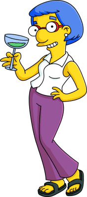

Луанн Ван Хутен
Луанн Ван Хутен, урождённая Муссолини (1 декабря 1952 года) – жена Кирка Ван Хутена и мать Милхауза Ван Хутена.
История появления!
Деньги или Милхауc? Ч.1
О, Милхауc, моё самое дорогое сокровище! Мамочка Дома.